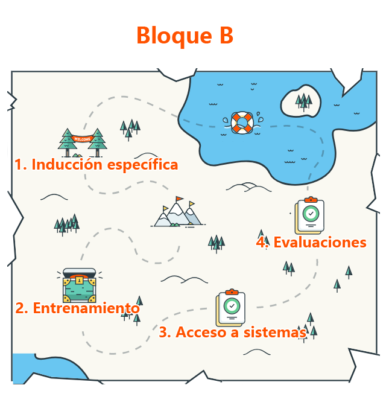

<ion-header>
    <ion-navbar>
        <button ion-button menuToggle>
            <ion-icon name="menu"></ion-icon>
        </button>
        <ion-title> Bloque B </ion-title>
    </ion-navbar>
</ion-header>


<ion-content overflow-scroll="true">
    <ion-fab top right edge>
        <button ion-fab (click)="irHome()"><ion-icon name="home"></ion-icon></button>
    </ion-fab>
    
<map name="Map" id="Map">
    <area alt="" title="Induccion" shape="rect" coords="76,189,194,282" (click)="irPage(Induccion)"/>
    <area alt="" title="Entrenamiento" shape="rect" coords="74,421,195,529" (click)="irPage(Entrenamiento)" />
    <area alt="" title="Acceso" shape="rect" coords="327,462,431,566" (click)="irPage(Acceso)" />
    <area alt="" title="Evaluaciones" shape="rect" coords="467,313,551,415" (click)="irPage(Evaluaciones)"/>
</map>

</ion-content>